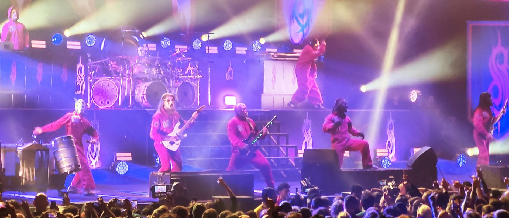

O Slipknot é uma banda norte-americana de metal formada em setembro de 1995 em Des Moines, Iowa. Reconhecida mundialmente por sua formação numerosa, sonoridade agressiva (frequentemente associada ao nu metal e groove metal), shows caóticos e pelo conceito visual de usar máscaras personalizadas e macacões numerados, a banda teve sua trajetória marcada por grande sucesso comercial e intensas mudanças de formação.
